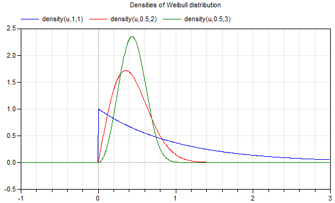
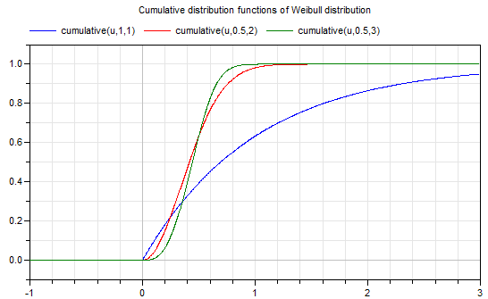

This package provides
of the Weibull distribution. Examples:


For more details of this distribution see Wikipedia.
Extends from Modelica.Icons.Package (Icon for standard packages).
| Name | Description |
|---|---|
cumulative | Cumulative distribution function of Weibull distribution |
density | Density of Weibull distribution |
quantile | Quantile of Weibull distribution |
Weibull.density(u, lambda=1, k=1);
This function computes the probability density function according to a Weibull distribution with scale parameter lambda and shape parameter k. Equation:
y = if u >= 0 then (k/lambda)*(u/lambda)^(k - 1)*exp(-(u/lambda)^k) else 0.0;
Plot of the function:
For more details, see Wikipedia.
density(0.5) // = 0.36787944117144233 density(1,0.5,2) // = 0.14652511110987343
Weibull.cumulative, Weibull.quantile.
Extends from Modelica.Math.Distributions.Interfaces.partialDensity (Common interface of probability density functions).
| Type | Name | Description |
|---|---|---|
Real | u | Random number over the real axis (-inf < u < inf) |
Real | lambda | Scale parameter of the Weibull distribution |
Real | k | Shape parameter of the Weibull distribution |
| Type | Name | Description |
|---|---|---|
Real | y | Density of u |
Weibull.cumulative(u, lambda=1, k=1);
This function computes the cumulative distribution function according to a Weibull distribution with scale parameter lambda and shape parameter k. Equation:
y := if u >= 0 then 1 - exp(-(u/lambda)^k) else 0.0;
The returned value y is in the range:
0 ≤ y ≤ 1
Plot of the function:
For more details, see Wikipedia.
cumulative(0.5) // = 0.3934693402873666 cumulative(0.5,0.5,1) // = 0.6321205588285577
Weibull.density, Weibull.quantile.
Extends from Modelica.Math.Distributions.Interfaces.partialCumulative (Common interface of cumulative distribution functions).
| Type | Name | Description |
|---|---|---|
Real | u | Value over the real axis (-inf < u < inf) |
Real | lambda | Scale parameter of the Weibull distribution |
Real | k | Shape parameter of the Weibull distribution |
| Type | Name | Description |
|---|---|---|
Real | y | Value in the range 0 <= y <= 1 |
Weibull.quantile(u, lambda=1, k=1);
This function computes the inverse cumulative distribution function (= quantile) according to a Weibull distribution with scale parameter lambda and shape parameter k. Equation:
y := lambda * (-log( 1-u)) ^(1/k);
Input argument u must be in the range:
0 ≤ u < 1
Plot of the function:
For more details, see Wikipedia.
quantile(0) // = 0 quantile(0.5,1,0.5) // = 0.41627730557884884
Weibull.density, Weibull.cumulative.
Extends from Modelica.Math.Distributions.Interfaces.partialQuantile (Common interface of quantile functions (= inverse cumulative distribution functions)).
| Type | Name | Description |
|---|---|---|
Real | u | Random number in the range 0 <= u <= 1 |
Real | lambda | Scale parameter of the Weibull distribution |
Real | k | Shape parameter of the Weibull distribution |
| Type | Name | Description |
|---|---|---|
Real | y | Random number u transformed according to the given distribution |